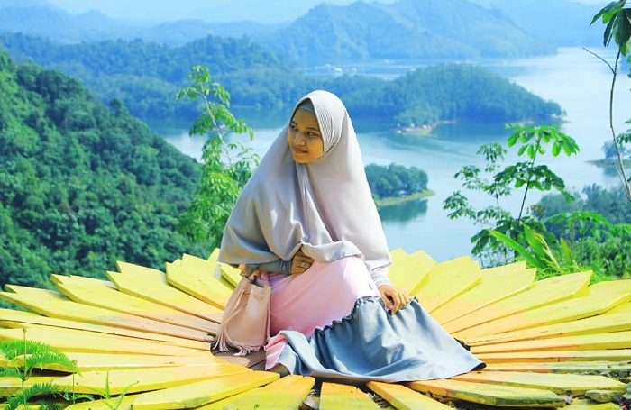
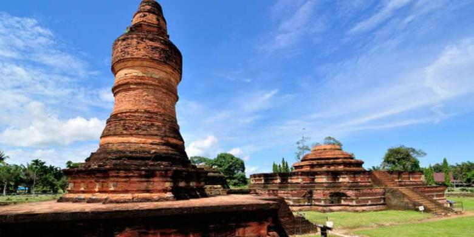

Asal Usul Ulu Kasok
Sejatinya, Ulu Kasok adalah sebuah desa yang ditenggelamkan untuk membuat proyek Pembangkit Listrik Tenaga Air Kota Panjang. Hasilnya, bukit-bukit karang tampak menyembul layaknya sebuah pulau setelah lokasi tersebut dipenuhi oleh air yang digunakan untuk membuat danau buatan di daerah tersebut.
Ulo Kasok sendiri menyajikan tiga wisata, yaitu air terjun, wisata pulau dan puncak Ulu Kasok. Namun dari tiga tempat ini paling banyak dikunjungi yakni puncak Ulu Kasok. Dari puncak Ulu Kasok, wisatawan dapat melihat hamparan beberapa gugusan pulau yang terletak di tengah bendungan Pembangkit Listruk Tenaga Air (PLTA) Kota Panjang dengan air yang masih hijau dan hutan yang lebat.
Selain mirip dengan pemandangan Raja Ampat, juga sangat memanjakan mata. Sehingga tidak mengherangkan, ketinggian Ulu Kasok menjadi obyek buruan wisatawan yang ingin berswafoto atau selfie dengan latar belakang gugusan pulau tersebut.
Hanya saja dibutuhkan ekstra tenaga karena wisatawan harus berjalan kaki dan mendaki lebih dari 500 meter untuk sampai ke puncak dari tempat parkir. Sehingga cukup menguras stamina, apalagi jalan yangdilalui juga masih berupa tanah.
TENTANG PENULIS

Namaku Yudi hamdi utama, lahir di kisaran tepatnya pada tanggal 25 juni 2001. Dibesarkan bersama kedua orang tuaku. Pada saat umurku 4 tahun keluargaku merantau ke provinsi riau tepatnya di bangkinang sp2 sukamulya. Mempunyai 2 orang adik, 1 laki-laki dan 1 perempuan. Aku sekarang sedang melanjutkan kuliah di Politeknik Kampar Bangkinang Kota dengan program studi D3 Teknik Informatika



Asal Usul Candi Muaratakus
Candi Muara Takus adalah situs candi tertua di Sumatra, merupakan satu-satunya situs peninggalan sejarah yang berbentuk candi di Riau. Candi yang bersifat Buddhis ini merupakan bukti bahwa agama Buddha pernah berkembang di kawasan ini. Candi ini dibuat dari batu pasir, batu sungai dan batu bata.
Candi yang satu ini terletak di Desa Muara Takus, Kabupaten Kampar, Riau. Letak candi yang agak jauh dari ibu kota Pekanbaru membuat Anda harus menyisihkan banyak waktu bila ingin berkunjung. Anda butuh waktu kurang lebih tiga hingga empat jam dari Pekanbaru untuk sampai ke Candi Muara Takus.
Alangkah lebih baik bila Anda memulai perjalanan sejak subuh supaya bisa tiba di Candi Muara Takus sebelum siang. Pemandangan candi di pagi hari sangat indah. Sedangkan pada siang dan sore hari cuacanya cukup terik dan sering mengalami hujan. Jika ingin mengabadikan keindahan candi ini, sebaiknya Anda membawa kamera profesional dengan lensa wide untuk mengambil footage secara luas.
Jangan sampai Anda lqupa mengunjungi Candi Muara Takus saat berada di Riau. Bukan hanya keindahan Kota Pekanbaru yang patut Anda nikmati selama berlibur. Candi Muara Takus juga menjadi salah satu destinasi wisata istimewa yang menantikan kedatangan Anda.